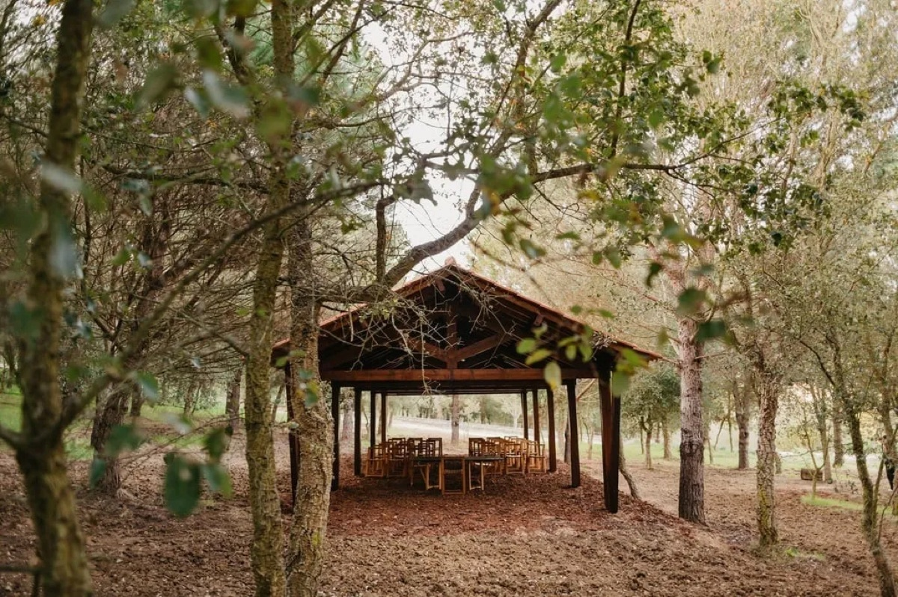

Тело и дыхание
Ощущения, удовольствие, напряжение и тонкие изменения в восприятии.

Пема Гитама
Больше 25 лет Пема следует и передаёт традицию Тантры Каула. На её принципах она создала WildTantra — собственный подход, раскрытый в трёх книгах и ретритах по всему миру.
Пема тонко чувствует человека и группу: знает, когда дать пространство, а когда прямо показать то, что мы привыкли обходить.
Она не сглаживает живое и не подгоняет его под готовую форму.



Зал для практики · паровой купол · ледяная ванна · террасы · бассейн · комнаты
DOMA Portugal — историческая усадьба в получасе от Лиссабона и океана. Каждый день шефы готовят специальное веганское меню, разработанное вместе с Пемой под ритм недели.